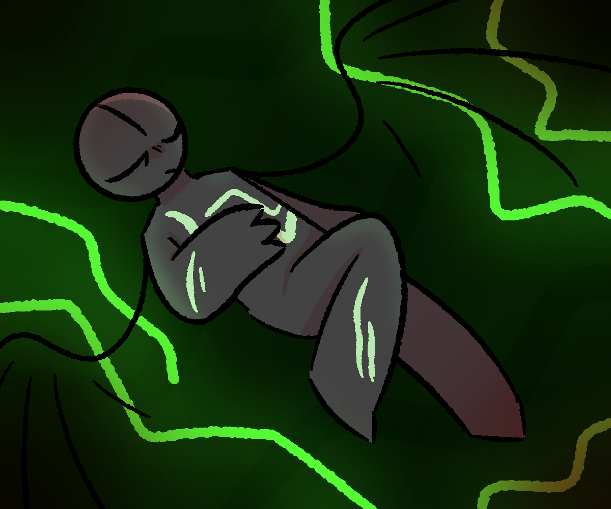

Every so often I find myself floating in my dreams. It's always in an empty void, without any other sound or stimulus. Those dreams always seem to last forever, and they stick within my mind. Which is why now, when I am amongst the abyss, I no longer scream onto the ears of no one. I instead recognize that this is a dream, and simply wait to awaken again.
Currently, I am waiting once more. Normally it doesn't take this long.
As I drift within the silence, a disturbance piques my curiosity. The rippling of a small stream...a noise, somewhere in this familiar space. I'd never heard something like that here before. I slowly turn my head towards the source of it, only to see...me. Younger, when I set out on an adventure of my own.
my spear in hand, I walked along a dirt road to nowhere. I was fine with wherever that road took me, so long as I was able to do some good in the world. I remember how fiery I was back then. I never backed down from a challenge. I was always looking out for whoever I met...that was how the world knew me. Most people believe I am dead these days.
The moment I begin to drift off into the past, the vision before me changes.
I see that fight again. That fateful day, where I fought against an odd sort. I cannot remember their name, or what exactly they looked like. But they had caused a plethora of damage. I, being the spry fighter I was, sought to stop them. But when I faced them...
I gasped, as the claws of my opponent slashed right through me, cutting my body in two. I was lucky it didn't cut my core; if it did, I wouldn't be here today. But with an injury that severe, my body couldn't handle it. I went into a coma that lasted months. And when I awoke, everything had changed. My allies of old had died trying to save me, while my enemies were brought down without me.
Even though I was dreaming, I could feel the burning sensation that I felt when I was first cut in half. I watched as the sliced parts of me drifted apart in the void, as I uselessly squirmed around in discomfort. I felt alone. Angry. Melancholic. Helpless.
...Helpless...
I awoke in my bed, almost hyperventilating with how fast I was breathing.
I slept thirty minutes longer than I normally do. Perhaps that would explain this oddity.
Regardless, that encounter left my body rather shaken up. As I yawn and stretch my limbs, I get out of bed and grab my normal attire. It'd be good of me to get some fresh air after that...but how I crave the silence of this small abode more than anything out in the world.
Walking out of this old, dusty home, I straighten out the collar of my coat. I expected to be greeted with the same scenery I see every day. The dull, almost purple rocky soil, which ended at a cliff overlooking a gap within the planet's very surface. Sometimes I look down that gap, and I see the core of the earth burning brightly.
That is exactly what I see right now. What I wasn't expecting, however, was this uninvited guest.
"Ah, my favorite guy!" Yttrium says as they notice me coming out. "I was waiting all morning for you. Surely you don't mind my company, hm?"
I sigh. Audibly. I don't mind it per se, but Yttrium in particular is a very confusing sort. They always show up with some bizarre story to tell me, or they'll simply sit there saying nothing for an hour or two before leaving. It looked like today would be the former. It'll be a gamble if I even pay attention to whatever they're going to go on about.
"What is it this time?" I ask them. They simply chuckle in response.
"Do you believe I'd come here with only a silly tale? You must be mistaken. I come to you with an important matter, Boron. An adventure, even!"
"Most of what you tell me is utter nonsense. How is this going to be any different?"
"First of all," Yttrium pauses, sitting on the chair at my porch. "You are confusing nonsense with jokes and such. I'm your friend, yes? I thought you could handle a laugh or two. Second," pause again, this time to stretch and get themselves comfortable. "Have you heard about the disappearances?"
My eyes widened with a tinge of concern. "No, I... don't believe so. News is slow when you live in the middle of nowhere."
"Yes, yes...Platinum visited you last week, mm? Mere hours after he gave you a farewell, he went off with some strange figure and hasn't been seen since. Everyone's favorite superstar, gone without a trace!"
I make the slightest gasp of surprise. As though something jolted through my heart which had forgotten how to beat. "He's what?"
Platinum, that bastard. He's one of the most well-known celebrities in the world. While I wouldn't lump him with the types of people who think they're better than everyone or those lazy, spiteful noble gasses, he sometimes lets that fame get to his head. Usually it's me who talks him out of doing idiotic things.
the one time I feel like he's being smarter than usual, he ends up getting kidnapped...I'm not surprised that it was him. What I am surprised by, however, is that someone is kidnapping people in the first place. And even larger than my surprise is my concern as to why. Was it for ransom? For fun? Did they hold some sort of grudge?...Why was I so worried about this anyways? What good is it serving besides burning me out more than I already am?
"Of course, he's not the only one who's gone missing. But he's the only guy you actually know! Regardless," Yttrium pops up out of the chair, a smile on their face. "I want to go have a little fun. You, me, discovering the plot behind these disappearances, yes? Sounds to me like you'll do something besides bird-watching and sleeping for once!"
They seem so casual about all of this. Then again, they never seem to be serious about anything. No wonder we rarely see eye-to-eye; unlike them, I actually care sometimes. Even when I wish I didn't.
"Do you have any leads? I doubt we'll uncover much without one." I reply with a huff. Yes, we need to act. I care very little for most people, though without someone like Platinum, my mind may crumble at long last. though I don't exactly trust Yttrium with being the "leader" here.
"Of course! What do you take me for, irresponsible?"
"Yes, actually."
"Well I am, but only when I feel like it! I managed to find a witness. Someone who saw Platinum moments before he vanished! She's all the way past the swamp."
"...The swamp. The gross, huge bog nobody wants to go in. Including me."
"Yes."
"Is there...any way to go around the swamp? At all?"
"Perhaps. Do you have a car? Or a private jet?"
"No, I don't really like leaving the house-"
"Then get your bug-spray, compadre. We must go."
With a barely audible groan, I rolled my eyes. Most of my days are spent doing nothing of use, and I kind of like it that way. With a life like mine, you don't get to feel any pleasantries, but you also no longer feel pain, anger, or discomfort.
I suppose I can't keep that up forever, as something always has to get in the way. I'll save my friend and return home, where I can be reduced to nothing again. That's the best outcome I can hope for.
I hastily go back into my home, looking through the drawers and cupboards for any random trinkets that I may find useful. I realize as I search that most of what I own isn't the most useful for traveling. I wonder why.
I end up finding the location of my old spear. Despite the lack of use, it still remains sharp and shining, protected from the elements in a special sleeve I put it in.
When I first put my spear in that sleeve, I swore I'd never wield it again, for that chapter of my life was over. But now, I know that it'll be needed more than anything. I know how dangerous the world can be.
I carefully slide the spear out of its sheath, effortlessly wielding it. A rush of nostalgia comes through me as I feel it in my grasp...but with it is a tinge of regret. For a moment, I felt like I was alive as I took a deep breath.
"One more time, old friend. One more time."